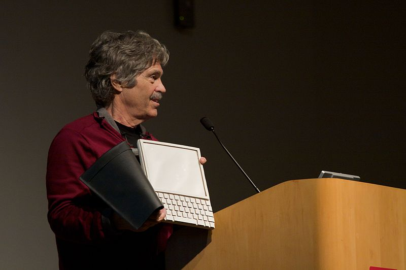

¿Conoces a Pin Pon?
[If] you think there’s some sophisticated recipe for success, then I think you are doomed. You’re making it too complicated.
– Brad Bird
¡Ah!, ¿cómo lograr que sucedan las cosas? O como dicen en los estados juntos: How to get things done.
También hablamos de cómo lograr que un proyecto sea exitoso. “Real Artists Ship”, decía Steve Jobs. “Las ideas son buenas, pero muchas veces falla la ejecución”, he escuchado decir.
¿Cómo lograr que pasen las cosas? Se pone mucho énfasis en que la gerencia de una empresa se preocupe de la estrategia, el desarrollo del liderazgo, y la innovación, pero que poco se considera la labor de ejecución. Y eso es lo más importante: ¡hay que lograr que las cosas pasen!
El método de Shrek
“Sí se pudo, sí se pudo” – Shrek
¿Saben? una de las cosas que más me molesta escuchar es cuando la gente dice: “no se puede”, o peor, cuando te dicen: “no vas a poder, porque esto y esto otro”, o “nosotros lo hicimos, pero tuvimos todos estas dificultades, y tu sabes como son en XXXX, te van a poner puros problemas”. ¡Ufff, no saben cuanto me molesta esa actitud!, ese afán de encontrarle todos los peros a una idea, meterle miedo a la gente, o simplemente plantarse en una actitud llena de excusas para simplemente no hacer las cosas.
No hay que ponerse límites, todos debemos superar nuestros miedos, y aceptar los desafíos. Y la verdad es que siempre se puede.
Mírenlos, ahí están Shrek y Burro, al borde del abismo, un frágil puente colgante sobre un abismo con ardiente lava al fondo, ese es el obstáculo a salvar, y ahí está burro, expresando sus temores. “No puedo cruzar este puente”, dice el Burro.
¿Y que hace Shrek? Lo motiva, lo anima, y le da una dirección:
– vamos a superar esto juntos, caminando paso a pasito
– ¿de veras?
– ¡de veritas, de deveritas!
– No te detengas y no mires hacia abajo
Y claro, Burro termina mirando hacia abajo y quiere volver, abandonar el proyecto, los temores han vuelto:
Y la solución es **puro liderazgo. **El rol de Shrek, digo del lider, es persistir con el objetivo, superar las oposiciones intermas, superar las situaciones de conflictos, y dirigir, dirigir y dirigir. El burro puede hacerlo, sólo que no cree en si mismo, no quiere hacerlo por que no confía en sus capacidades, o le teme a las condiciones ambientales, cree que los obstáculos son insuperables. Hay otros tipos de burros que simplemente son burros, y no quieren hacer nada, pero esos burros no valen la pena y es mejor dejarlos al otro lado del puente, no vale la pena llevarlos al otro lado.
Finalmente el Burro pudo. “sí se pudo, sí se pudo”, le dice Shrek, y superada la prueba continúan con su aventura...
DOM
Yo hace un tiempo visualicé un modelo, que llamo DOM, que no tengo idea si está documentado en alguna parte, tampoco es una cosa muy original, pero es como creo yo que se deben hacer las cosas, y se los voy a contar, a ver si me lo compran, en una de esas termino dando de esas charlas de 2.000 dolares por persona :), el modelo es simple:
DOM
Dirección+Organización+Método
Dirección
“The worker is not the problem. The problem is at the top! Management!” – W. Edwards Deming
Para W. Edwards Deming el trabajo de la administración es dirigir los esfuerzos de todas las componentes hacia el objetivo del sistema. El primer paso es la clarificación, todos en la organización deben entender el objetivo y como dirigir sus esfuerzos hacia este.
La dirección parte por entregar una visión clara y plantear los objetivos de una forma precisa.
Les voy a dar uno de los mejores ejemplos que conozco de esto:

“I believe that this nation should commit itself to achieving the goal, before this decade is out, of landing a man on the Moon and returning him safely to the Earth.”
“Creo que esta nación debería comprometerse a lograr la meta, antes de que esta década termine, de poner un hombre en la Luna y retornarlo de forma segura a la Tierra.”
Este famoso discurso de John Kennedy plantea claramente el resultado: “colocar un hombre en la Luna”, pero también establece el plazo u oportunidad: “al final de esta década”, y los parámetros de calidad: “y retornarlo de forma segura a la Tierra”.
Cuantas veces vemos que se establece lo que se quiere, pero no para cuando. O se ignoran los parámetros de calidad necesaria. ¿Se imaginan si Kennedy no hubiera incluido la última frase: “retornarlo de forma segura a la Tierra”? (Para ver un ejemplo les sugiero ver la película de Boris Quercia, “Chile Puede”).
Pero lo más notable es que Kennedy plantea por qué quiere este desafío:
“We choose to go to the moon. We choose to go to the moon in this decade and do the other things, not because they are easy, but because they are hard, because that goal will serve to organize and measure the best of our energies and skills, because that challenge is one that we are willing to accept, one we are unwilling to postpone, and one which we intend to win, and the others, too.”
“Elegimos ir a la Luna en esta década y hacer las otras cosas, no porque sean fáciles, sino porque son difíciles, porque la meta servirá para organizar y medir lo mejor de nuestras energías y habilidades, porque ese desafío es el que queremos aceptar, uno que no estamos dispuestos a posponer, y uno al que pretendemos ganar, y los otros también.”
La dirección debe ofrecer una visión, clara y precisa, pero también un desafío. Eso es el liderazgo, y a esta visión debe comprometerse la organización, lograr este compromiso es el rol de lider. “Se puede”, ese debe ser nuestro mantra.
Organización
A fines de los 90 Steve Jobs dijo: “The PC wars are over. Done. Microsoft won a long time ago.”, ¿significaba eso que se había rendido? No, porque Steve Jobs tenía otra visión.

Alan Kay dijo: “la mejor forma de predecir el futuro es inventándolo”. En 1968 Kay había desarrollado el concepto del Dynabook. A la derecha está la foto de la maqueta de ese dispositivo, por supuesto no era posible realizar esto en esos años. Muchas cosas debieron desarrollarse antes.
Steve Jobs quería realizar la visión de Kay. Cuando volvió a Apple su objetivo era realizar esa visión, que terminó reflejada en el iPad. Pero llegar a ese punto, cruzar ese puente colgante requería organizar las habilidades y energías de Apple.
Jobs se enfocó en un primer objetivo, lograr que Apple fuera una empresa rentable. Cuando él volvió la compañía tenía muchas lineas de productos. Los canceló, fíjense que incluso canceló el Newton, que era un producto que se parecía a la visión de Jobs. Lo primero que hizo Jobs al volver fue enfocar a Apple en 4 lineas de productos. Organizó todo dándole un foco, volver a ser rentables.
Foco, eso es lo más importante. Concentrarse en una cosa a la vez, caminaremos juntos paso a pasito. Eso es organización. ¿Cuál es nuestra situación?, ¿cuál es nuestro objetivo?, ¿cuales son los pasos para ir desde nuestra situación actual a la situación deseada? Establecer un plan, la lista de todo lo que hay que hacer, y hacerlo!
Y jobs tuvo que dar todos los pasos intermedios para salvar el puente sobre el abismo: obtener dinero, desarrollar el iPod, luego el iPhone, y por fin pudo sostener en sus manos su visión.

We used to dream about this stuff. Now, we get to build it. It's pretty neat.
Lo importante en que el modo de organizar las cosas por parte de Jobs fue enfocar a su equipo en las tareas necesarias, cada cosa a su tiempo, cuando se supera una etapa se pasa a la siguiente, no antes, paso a pasito.
¿Y cómo hacerlo? Bueno, como todo lo importante en la vida, el como lo aprendimos cuando teníamos 5 años.
Método
Hombre de Jengibre: ¿Tu conoces a Pin Pon?
Lord Farquat: ¿Pin Pon?
HdJ: ¡Sí, Pin Pon!
LF: Sí, es un muñeco muy guapo y de cartón
HdJ: Sí, se lava su carita con agua y con jabón
LF: ¡¡¡Con agua y con jabón!!!
HdJ: ¡¡¡Sí, se lava la carita!!!
Contaba Jorge Guerra que una vez se le acercó una mujer en la calle, ella era abogada y le dijo que había logrado sacar su carrera y tenía éxito en su vida por una canción que él compuso, y que cantaba en su programa infantil caracterizado como el muñeco Pin Pon.
Esa canción es esta:
Método
Método .. método
Si quieres hacer algo bien necesitas mucho
método, método, método, método, método.Si tenemos un problema
con gran dificultad
lo que hay que hacer primero...
es pensar.. es pensar ... es pensar.Pero como pensar?
pero como pensar?
pen-sar con.….Método .. metodo
Si quieres hacer algo bien necesitas mucho
método método método metodo método.una vez que se ha pensado
y encontrado solución
lo segundo que se impone
es la acción... es la acción.. es la acción.Pero como actuar?
pero como actuar?
Actuar con .…Método .. método
Si quieres hacer algo bien necesitas mucho
método método método método método.
Y si se dan cuenta todo esto que les cuento del DOM es un método :)
Todo es muy simple, como dice Brad Bird, “Si piensas que hay una receta sofisticada para el éxito, entonces creo que estás condenado. Lo estás haciendo muy complicado.”
Todo se reduce a pensar, encontrar la solución y luego la acción. Eso es DOM, dirección, organización, y método.
Dirección para establecer la visión, plantear el problema, definiendo su alcance, oportunidad y los parámetros de calidad requerido. Organización, se debe analizar la situación actual, encontrar la solución, establecer los pasos a ejecutar. Y Método, que es la manera de ejecutar cada paso uno por uno.
Muchos líderes se quedan en la dirección, creen que con sólo plantear la visión las cosas van a suceder. Es el estilo de muchos gobernantes que hemos tenido, que van por el mundo creyéndose estadistas, que creen que hicieron un buen gobierno, cuando sólo dieron bonitos discursos plagados de buenas intenciones.
Hay otros que son incapaces de actuar cuando se requiere, o que no saben organizar. Están los que se limitan a preguntar cómo van las cosas, pero si ven que algo está mal se quedan allí, esperando que se resuelvan solas. O los que que presentan el plan y luego se encierran en sus oficinas, sin interactuar con su equipo, sin controlar, ni dirigir. Y en el otro extremo los que no confían en su equipo y terminan ellos haciéndolo todo o micro controlando.
No, el liderazgo es equilibro. Hay que entregar la visión, organizar y entregar un método, pero la labor debe ser realizada por quienes deben hacerla. Para eso está el equipo, y un buen lider se caracteriza porque logra armar un buen equipo, que logra llevar a cabo las tareas, un equipo que hace que las cosas sucedan.
Es método, así es como se logra que las cosas pasen, y que los proyectos salgan a tiempo y en el presupuesto, con método, método, método.
Y todo esto me lo enseño un muñeco muy guapo y de cartón, no sé para que perdí tanto tiempo yendo a la universidad.